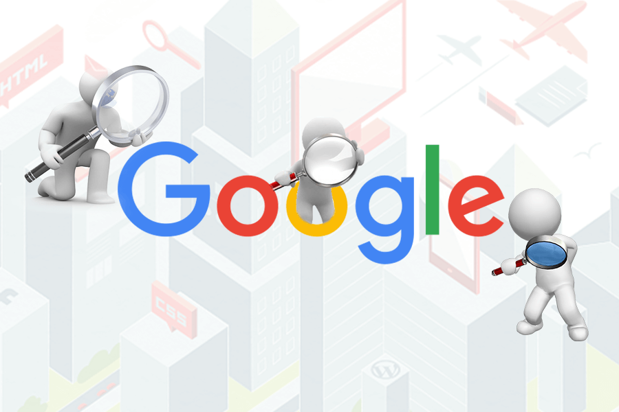

Web tasarım ajansı seçerken tabiri caizse kılı kırk yarmalı, size ve işinize en uygun ajansı seçmelisiniz. İşletmelerin çoğu, bir ajansla anlaşıp beğenmeyince başka ajansa geçmeyi uygun görse de aslında markanın kimliği ve pazarlama stratejisi bakımından, uzun süre aynı ajansla çalışmak daima daha mantıklıdır. Web tasarım ajansı neden önemlidir? Çünkü tüketicilerin yüzde ellisinden fazlası, web sitesi […]
WEB TASARIM AJANSI SEÇİLİRKEN NELERE DİKKAT EDİLMELİDİR?
GOOGLE’DA ÜST SIRALARA ÇIKMA YÖNTEMLERİ

Google’da üst sıralara çıkma yöntemleri ile ilgili bu yazımızda, sizlere daha çok müşteriye ulaşmak için web sitenizde ne tür iyileştirmeler yapabileceğinizden bahsedeceğiz. Konuya girmeden söyleyelim, önereceğimiz yöntemler herkes tarafından kolaylıkla yapılabilir gibi görünse de etkili sonuçlar almak için uzmanlık gerektirmektedir. Google’da üst sıralara çıkma yöntemleri adı altında pek çok içeriğe denk gelmiş olmalısınız. Bu içeriklerde […]
E-TİCARET SİTESİ KURMAK İÇİN 5 İPUCU
E-ticaret sitesi kurmak bugünlerde, her zaman olduğundan daha önemli. COVID-19 pandemisinin de etkisiyle alışveriş alışkanlıkları neredeyse tamamen dijitale taşınmış durumda. Bu sebeple, bir işletmenin e-ticarette bulunması bir zorunluluk halini aldı. E-ticaret sitesi kurmak bir marka oluşturmak, daha fazla müşteriye ulaşmak ve kârınızı artırmak için çok önemli bir adımdır. Fakat bunun için doğru araçlar kullanılması ve […]